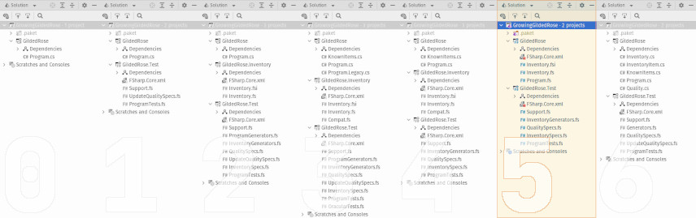

This is part five-of-four (no, really!) in the series, Growing a Gilded Rose. Over the course of this series of posts, I hope to demonstrate incrementally improving a legacy code base which has thorny requirements, while also presenting a few different software development tools or concepts. The full series is as follows:
Bonus Content
- F# All the Things! (this post)
- Meh... C# Can Do That, Too

Overview
We've technically concluded our series on the Gilded Rose Kata. You can
see the final state-of-affairs in the companion repository, under a branch
called 4_extended (and if you haven't yet read the previous entries in the
series, now is a good time to get caught up). However, it turns out a bit more
fun can yet be eked out of this activity. Up until now, we've been operating
under some fairly specific constraints:
- Keep the legacy program
- Don't mess with the
GildedRose.Itemclass or theProgram.Itemsfield
But let's play a bit of What If...
Management at the Gilded Rose Inn has been really impressed with all the changes. And just this week, the Goblin in the Corner, announced he's retiring (after 107! years of loyal service) to his condominium in Boca Raton, where he hopes to play shuffleboard and work on model ship building. So, you've been given the go ahead to take full ownership of the inventory program, going “all in” on F#.
The plan then, is to create a new F# console application and to directly
incorporate the source of the GildedRose.Inventory project. The test suite
will remain as-is, providing (as always) a safety-net for all changes being made.
The Swap
The easiest place to start is to simply delete the GildedRose console
application project from the overall solution. Then, using the means of your
choosing (CLI, IDE, et cetera), create a new project -- an
F# console application -- called (unsurprisingly) GildedRose. Theres
should ultimately be three files in this new project (in this order):
Inventory.fsiInventory.fsProgram.fs
The first two files are taken directly from the project GildedRose.Inventory.
Once the files are copied, the F# library project can also be deleted. But wait!
Didn't that project also have a file called Compat.fs? Don't we need that?
Actually, we don't. It only helped to smooth out calling F# from C#. No more
C# means no more need for compatibility. Further, we can simplify the inventory
files slightly. We can remove the following metadata from each file:
[<CompiledName("UpdateItem"))>]
It appeared in Inventory.fsi and Inventory.fs, on lines 63 and 40,
respectively. Much like the compatibility file, a lack of C# obviates the need
for the attribute.
Finally, there is the main file, Program.fs, which we'll flesh out now. It
starts, as is common in .NET, with a namespace declaration and a statement to
import some needed libraries:
namespace GildedRose
open GildedRose.Inventory
The file further defines a module containing the names of several
“well known” inventory items. This will be used later to initialize program
state. It is analogous to the file KnownItems.cs in the now-discarded C#
project.
/// Since an item's "kind" (and thus, its behavior) might sometimes be
/// determined by its name, it's useful to have some well-known names.
[<RequireQualifiedAccess>]
module KnownItems =
// Depreciating items
let [<Literal>] Dex5Vest = "+5 Dexterity Vest"
let [<Literal>] Mongoose = "Elixir of the Mongoose"
// Conjured items
let [<Literal>] ManaCake = "Conjured Mana Cake"
// Appreciating items
let [<Literal>] AgedBrie = "Aged Brie"
// Backstage Passes
let [<Literal>] StageTix = "Backstage passes to a TAFKAL80ETC concert"
// Legendary items
let [<Literal>] Sulfuras = "Sulfuras, Hand of Ragnaros"
Finally, we arrive at the Program module, which houses a single function
comprising the entirety of the non-model-related program logic (i.e. state
management), show here in its entirety:
module Program =
[<EntryPoint>]
let main _ =
printfn "OMGHAI!"
let items =
[
Depreciating (KnownItems.Dex5Vest, Quality.Of 20uy, 10<days>)
Appreciating (KnownItems.AgedBrie, Quality.Of 0uy, 2<days>)
Depreciating (KnownItems.Mongoose, Quality.Of 7uy, 5<days>)
Legendary (KnownItems.Sulfuras, MagicQuality())
BackstagePass (KnownItems.StageTix, Quality.Of 20uy, 15<days>)
Conjured (KnownItems.ManaCake, Quality.Of 6uy, 3<days>)
]
for item in items do
let name, quality, sellIn =
match updateItem item with
| Legendary (name, quality) ->
// normalize for compatibility with existing approval test
(name, byte quality, 0)
// ⮝⮝⮝ legendary / ordinary ⮟⮟⮟
| BackstagePass (name, quality, sellIn)
| Appreciating (name, quality, sellIn)
| Depreciating (name, quality, sellIn)
| Conjured (name, quality, sellIn) ->
// normalize for compatibility with existing approval test
(name, byte quality, int sellIn)
printfn $"Item {{ Name = {name}, Quality = {quality}, SellIn = {sellIn} }}"
printfn "Press <RETURN> to exit."
System.Console.ReadLine() |> ignore
0 // OK!
Lines 2 and 3 define the program's entry point. The function main actually
has the type string array -> int (read as: "receives a string array as input,
and produces an integer as output"), which is required for any function marked
with the EntryPointAttribute. However, as we don't use the input
arguments (the string array), it has been discarded, as indicated by the
use of an underscore (_) on line 3. Should we have wished to access this data,
which the program receives at startup, we need to simply replace the underscore
with a valid identified (e.g. args).
Then program begins by printing a greeting to standard output (line 4). Next,
(lines 6 through 14, inclusive) we initialize the current inventory. The interesting “meat” of the program occurs on lines 16 through 32, inclusive.
Having initialized the inventory, we now iterate through everything using a
for...in loop. Each item, in its turn:
- is updated via a call to
Inventory.updateItem(line 18) - matched for its item kind (lines 19, 25, 26, 27, 28)
- decomposed into its constituent values (lines 21 and 30)
- said constituent values are bound to local names (line 17)
- said local names are printed to standard output (line 32)
Note, the format used in printing exactly matches that of the legacy program. This is necessary, as it obviates the need to make any changes to the approval test in the test suite. Finally, we prompt the user to signal when they are done reading what we've printed (lines 34 and 35). Then, on line 36, we exit (indicating a successful run of the program). If everything has gone as planned, there is no observable difference in the program's behavior. Further, 100% of the test suite should still be “passing”.
Conclusion
Through these changes it's worth noting what's missing. There are now only two
projects, instead of three. The number of non-test-related files has been
reduced from four down to three. And, most importantly, we're using the model
for everything (except state management). That is, we've eliminated the Item
class (once so protected by the goblin in the corner), as it serves no purpose.
Further, we reduced the breadth of knowledge required to support this code base.
It's fair to say that, overall, we decreased the maintenance burden for the
Gilded Rose Inn's inventory management software.
From this foundation, there are several possible future enhancements. A motivated developer might experiment with any (or all) of the following:
- Allow the program to update multiple “days” in one run
- Load/save inventory from/into persistent storage
- Change the output to display the amount of change for each item
In any case, all of the code in this blog post, plus the test suite, can be
found in the companion repository, in a branch called 5_fs-alone.
And, if you have questions or want to share feedback, there's also a
discussion forum for this blog series at the companion repo.
Have fun, and happy coding!